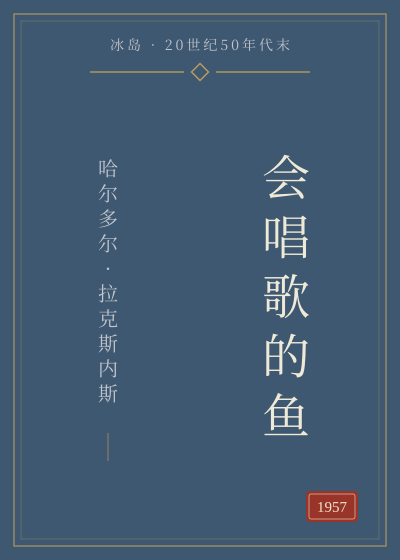
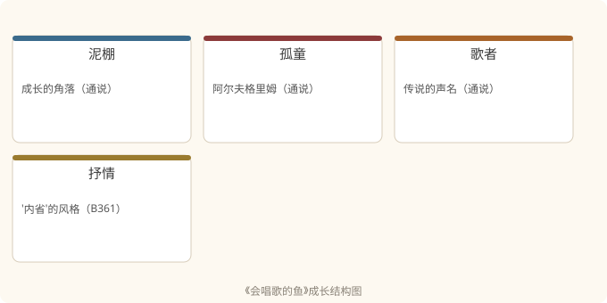

会唱歌的鱼
一、基本信息
| 作者 | 哈尔多尔·拉克斯内斯 |
|---|---|
| 成书/出版 | 1957年（Britannica B361：Brekkukotsannáll (1957; The Fish Can Sing)——中译名待核） Halldor Laxness — Encyclopaedia Britannica（百科全书） |
| 国别/地区 | 冰岛 |
| 时代 | 现当代 · 20世纪50年代末 |
| 体裁 | 长篇小说 |
| 语言 | 冰岛语 |

《会唱歌的鱼》成长结构图（主题·结构图）
二、创作背景
Britannica（B361）：Brekkukotsannáll——'more lyrical and introspective'（B361：1950年代后更抒情内省）。
Britannica（B361）：拉克斯内斯——1955诺奖。
题材（通说待核）：孤童阿尔夫格里姆在雷克雅未克'泥棚'的成长与'会唱歌的鱼'传说。
三、内容脉络
（通说待核）'泥棚编年'：孤童与收养他的老夫妇。
（通说待核）'会唱歌的鱼'：加尔巴尔的声名与死亡。
四、主要人物表
| 人物 | 身份 | 说明 |
|---|---|---|
| 阿尔夫格里姆 | 孤童 | （通说待核） |
| 加尔巴尔 | 歌唱家 | （通说待核） |
五、主题与艺术特点
- '抒情内省'的晚期风格（B361）。
- 孤童的成长（通说待核）。
- 冰岛小社会的幽默（通说待核）。
六、影响与评论
- Britannica：Brekkukotsannáll (1957)（B361）。
Halldor Laxness — Encyclopaedia Britannica（百科全书） - Britannica：'more lyrical and introspective'（B361）。
Halldor Laxness — Encyclopaedia Britannica（百科全书）
七、阅读建议
难点
- 冰岛首都的市井语调。
- '编年'的幽默。
- 《会唱歌的鱼》中译名（《唱歌的鱼》）待核。
- 冰岛文原版。
拉克斯内斯抒情篇；与《独立的人们》对读。
八、待核实
- 阿尔夫格里姆/加尔巴人名核对（通说）。
- 1957年出版细节待核。
- '泥棚'（Brekkukot）细节待核。